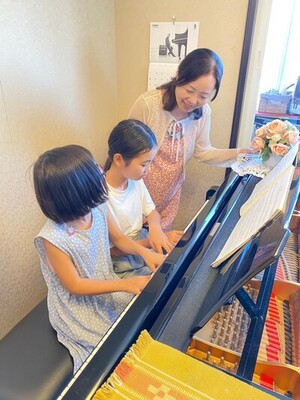

プロフィール

主宰 山川由希子
武蔵野音楽大学ピアノ科卒業。
コンセルヴァトワール尚美ディプロマ終了。
スイスルチェルンにて、マスタークラス受講。 小林研一郎指揮、東京交響楽団と共演。
その他、神奈川フィル、徳島フィルと共演。 コバケンとその仲間たちオーケスラ参加。
また、調布FM「東京オアシス」のパーソナリティとして、 ゲストを迎えたり、
「やわらかクラシック」などを担当し、 クラシック音楽を分かりやすく伝えている。
武蔵野音楽大学ピアノ科卒業。
コンセルヴァトワール尚美ディプロマ終了。
スイスルチェルンにて、マスタークラス受講。 小林研一郎指揮、東京交響楽団と共演。
その他、神奈川フィル、徳島フィルと共演。 コバケンとその仲間たちオーケスラ参加。
また、調布FM「東京オアシス」のパーソナリティとして、 ゲストを迎えたり、
「やわらかクラシック」などを担当し、 クラシック音楽を分かりやすく伝えている。
ピアノ指導歴

30年以上。
生徒さんには、東京藝術大学、桐朋学園大学、
東京音楽大学、国立音楽大学などに進学し、
プロの道に進まれた方もいます。
希望者にはコンクール、オーデションを
目指し、受賞者も多数。
大人の生徒さんも コンクールに挑戦している方もいます。
コンクールなどの目的ではなく、お一人お一人
の目標や練習できる環境に合わせてご指導
させていただきます。
年に一度の生徒さんのコンサートには全員
楽しみに、参加されています。
生徒さんには、東京藝術大学、桐朋学園大学、
東京音楽大学、国立音楽大学などに進学し、
プロの道に進まれた方もいます。
希望者にはコンクール、オーデションを
目指し、受賞者も多数。
大人の生徒さんも コンクールに挑戦している方もいます。
コンクールなどの目的ではなく、お一人お一人
の目標や練習できる環境に合わせてご指導
させていただきます。
年に一度の生徒さんのコンサートには全員
楽しみに、参加されています。